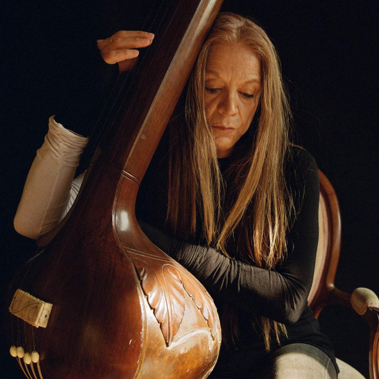

A 108-hour training in sound, consciousness, and embodied voice — developed over more than three decades. Rooted in Integral Yoga, sound art, and the universal language of music.
The Yoga of the Voice International Certificate is a 108-hour training in sound, consciousness, and embodied voice, developed over more than three decades through the Vox Mundi School, and is continually evolving with the shifting currents of social and environmental change. Rooted in Integral Yoga, sound art, and the universal language of music, this program invites the voice, sound, and resonance to become instruments of liberation, attunement, and spiritual engagement.
Unlike any other voice, music, and sound school program, this unique training bridges cultures and disciplines, integrating Western extended vocal techniques, contemplative practices, and the discipline and science of yoga with the deep listening and melodic sensibility of Indian ragas and medicine music like icaros and shamanic chants. The program is designed both for those seeking personal transformation through the sound and for artists, therapists, medicine circle facilitators, yoga practitioners, and educators who wish to develop a professional voice- and sound-centered practice.
"The Voice is a breeze of Life, Lightness, Truth, Bliss, without any Insistence."
The Mother (Mirra Alfassa — Integral Yoga)
Lineage, Community & Format
For more than 30 years, the Vox Mundi School has evolved into a living creative community (sangha) of voice, sound, and music, offering training, retreats, and university-level teaching across the Americas, Europe, and Asia. Students stay involved for many years, deepening their sadhana, becoming teachers, and co-creating an ongoing culture of shared learning and mutual mentorship.
The annual Summer Retreat in the Santa Cruz Mountains serves as a connective tissue for the international community, weaving together in-depth practice, performance, and contemplative immersion. Through the Study Abroad Journeys, students and teachers travel together, learn from the evolving practice, and maintain lifelong bonds of collaboration and shared inquiry.
The Certificate is structured in modular form, combining:
Live online Modules (small groups, individual mentoring, practicum, and online forum)
Weekend hybrid intensives and clinics
In-person retreats
One-on-One Therapeutic Voice Clinics
Recording and Workshop collaborations among the trainees
Students at any level may enter through individual modules and accrue hours toward the 108-hour International Certificate or take modules independently for focused exploration. If students decide to become a teacher of the Yoga of the Voice, they have the option to credit these Certificate hours towards the Vox Mundi School Teachers Training Certificate.
What Is the Yoga of the Voice?
The Yoga of the Voice is a comprehensive method that approaches the voice as sonic energy — a vital and primordial force — beyond cultural conditioning, level of musicianship, and performance anxiety. Through guided sound tools, vocal meditations, music listening, and somatic yogic practices, students engage in mindful breathing practices designed to activate subtle energetic awareness and cultivate a spacious, receptive mindset attuned to the freedom of the imagination.
Key Characteristics
Voice as a portal to awakening Shakti (creative universal energy)
Sound and silence as co-arising fields of awareness and consciousness expansion
The "space between tones" as a site of subtle perception and expanded listening
Integration of Indian ragas and Dhrupad-inspired tunefulness with modern vocal arts
The voice as a vehicle for healing, contemplation, and liberation
When the voice is approached in this way, many students experience increased self-confidence, a more vivid musical practice, and the foundation for a sustainable professional practice, if that is their path. For over three decades, the Vox Mundi School has carried this living lineage, evolving continuously with the shifting currents of human sensibility and social change.
Who This Training Is For
All levels of experience are welcome. No prior musical training is necessary — curiosity and willingness to listen deeply are the primary prerequisites.
A recording of Saraswati Salutation with cello, offering an invocation to the goddess of wisdom, music, and the creative flow at the heart of Yoga of the Voice.
0:00—
Saraswati Salutation with Cello
Training
How the Training Is Structured
The Yoga of the Voice Certificate is designed with flexibility and depth in mind. Choose to take modules independently or accumulate hours toward the complete 108-hour International Certificate, and towards the Teacher Training Certificate, if the graduate wishes to dive deeper into becoming a teacher of the Yoga of the Voice.
Modular Format
Take individual modules over several weeks, each with a specific focus. Small groups, individual mentoring, and online forums.
Live Online Sessions
Participate in real-time classes from anywhere. Recordings often available for asynchronous learning.
In-Person Retreats and Study Abroad
Optional immersions at our Santa Cruz Retreat and other locations for deeper integration and community connection.
One-on-One Clinics
Therapeutic Voice Clinics available online or in-person for personalized healing and vocal development.
Upcoming 2026 Modules
The 2026 series is offered in several Modules over the year. Each Module has a specific focus and can be taken independently, as a stand-alone immersion, or as part of the 108-hour Yoga of the Voice International Certificate.
Admission to certain modules may require an online pre-consultation. Pre-registration is required; to inquire or register, email: voxmundi@yahoo.com.
Spring Module (May – August)
Free Your Voice as a Portal to Awakening Shakti
This core training introduces the foundational principles and practices of the Yoga of the Voice, focusing on voice as sonic energy, spontaneous expression, and spiritual practice.
You Will
Realize and refine the quality of your sonic presence in speech, chant, and song
Become aware of and engage with the infinite space between tones, refine intonation, and expand your vocal range
Open to emotions as creative expression, depersonalizing the voice by attending to sound and the space of silence
Learn to listen with the body and connect with the multi-sensorial source of embodied voice
Receive an introduction to Indian ragas, mindful tone-breathing, the chant of Dhrupad, and medicine melodies
Practice deep listening with sound tools that feel good, and encourage new portals of innovation and the facilitation of chanting circles
Experience the joy of spontaneous self-expression beyond impediments
Discover the voice as a free flow of energy and as a sound that travels and heals
Learn foundational voice and sound healing applications
This Module may be taken on its own or counted as 40 hours toward the 108-hour Certificate.
Fall Module (October – December)
Play Your Voice: The Art of Improvisation and Sound Healing
This course invites students to experience the generative quality and musicality of their voice combined with other instruments, an original repertoire of improvisation strategies, guided practices, recordings, and creative collaborations. The voice is sonic energy that can be liberating, tuned, and attuned to emotional balance and relational presence. Through playful, contemplative inquiry, students will explore voice as a musical instrument for community building, sound healing, and performance.
The Voice Becomes
An entry point to connect with life, energy, and vitality
A medium to assess energetic disposition and health
A primordial vehicle to release tensions and clear the mind
A way of attunement that activates circulatory systems and supports nervous-system regulation
A joyful journey into intuition, harmony, and resonance
An instrument to cultivate happiness and physical and emotional well-being
Rediscover Your Sense of Wonder: Embark on a journey to vocal freedom and musical creativity. Reimagine what "singing" and self-expression mean by breaking free from limiting beliefs — open yourself to new possibilities with your voice.
Reconnect with Your Essence: Experience spiritual growth and deeper self-awareness through the transformative power of the voice. Discover how the voice functions as both a musical instrument and a potent tool for healing and self-inquiry.
Refine Tone and Musicality: Enhance your vocal technique by practicing sustained notes and meditative melodies. Develop patience and relaxation, allowing both body and mind to unlock new levels of tunefulness, vocal precision, and trance-space.
Embrace Emotional Expression: Learn to release emotions through continuous vocalization. Develop the ability to let feelings flow musically, transcending purely personal stories and tapping into universal expression.
Enjoy Improvisation and Composition: by playing with extended vocal techniques inspired by Indian classical raga and experimental contemporary music as a template, including vocal percussion, multiphonics, and expanding the sonic range of your voice as an actual musical instrument. No previous experience is required.
Build an Inspiring Repertoire: Explore a diverse array of vocal pieces and songs that focus on the textures and architectures of sound. Expand your creative imagination and cultivate a unique artistic voice.
Explore subtle dimensions of sound and auditory perception where clarity and luminosity abide, transforming consciousness and emotions.
Enhance your expressive confidence by having a mentor guide your creative process. Creativity is not an individual process.
Collaborate and Facilitate Group Chanting: Engage in dynamic, creative collaborations with your peers. Gather yourself in co-creative environments that foster deep listening, artistic renewal, and transformation.
Infuse your practice with Poetry — and let poetic expression enrich your journey towards inner resonance.
"The disciplined practice of music as yoga is one of the most powerful ways to embody the sacred and mystic texture of reality — and the voice is the most energetic agent to facilitate this transmission of power."
— Silvia Nakkach
Outcomes
General Applications
By the end of the core sequence, students will be able to
Understand voice-based healing as a way of enhancing inner joy and human resonance
Grasp basic principles of tone production and tuning, and apply them in professional contexts (therapy, teaching, performance, facilitation)
Engage the Vocal Meditation sadhana as a modality of self-healing and "tone magic"
Use a repertoire of practices — ancient vibrational formulas, healing syllables, and chants — to release tension, improve memory, and connect ancestral lineages with innovative vocal techniques
Identify and expand the acoustic range and corporeal spectrum of their particular voice
Design a daily practice that supports their day and work life
Lead simple chants and vocal rituals to co-create and commune with others as a tool for creative collaboration
Use the voice as a gateway to universal languages that have been silenced
Combine the energetic dynamics of the voice with the intelligence of the senses, hand gestures, and deep listening to foster neuro-coherence
Integrate class information into interdisciplinary settings: integrative medicine, nursing, osteopathy, psychotherapy, bodywork, yoga, education, music, and energy-centered therapies
Create a private sanctuary of voice purification techniques that clear energy patterns, stimulate the brain, and enhance memory through call-and-response chanting
Areas of Study & Modalities
Woven through weekend trainings, virtual sessions, and retreats
Using the voice in shamanic journeys
Vocal improvisation and medicine melodies
The shamanic, contemplative, and expressive dimensions of the voice
Enhancing memory through vocalizations and call-and-response chanting
The voice and the art of songwriting
Attending to vocal impediments through subtle, somatic approaches
Uses of the voice in sound healing and therapeutic alliances
Performance ease and stage presence
Creating a vocal music repertoire, including classical Indian healing mantras and ragas
Therapeutic Voice Clinics are offered as part of the curriculum, either one-on-one or in small groups, online or in-person, to support individualized healing and integration.
Register
Practical Details
Next Online Module: Begins May (dates and fees to be confirmed; stay tuned)
Format: Live online sessions, recordings (if offered), small-group practice, mentoring, forum
Location: Online, with optional in-person retreats in Santa Cruz Mountains and other sites
Registration: Email voxmundi@yahoo.com with your location, background, and your intention for taking the course
Admission: Some modules may require a brief pre-consultation to ensure alignment and support
To receive the Yoga of the Voice International Certificate (108 hours), students are invited to:
Complete a minimum of 3 core Modules (e.g., Free Your Voice, Play Your Voice; Voice and Sound Healing, Embodied Listening, and Teaching Practicum)
Participate in at least one Summer Retreat or equivalent in-person immersion
Attend a Therapeutic Voice Clinic or Individual Mentoring sessions
Complete a Practicum Project (e.g., facilitating a chanting circle, developing a vocal healing session, generating an original recording, or creating a research-based portfolio integrating the work into their field)
Specific hour requirements, dates, and fees are announced annually on the Vox Mundi Project website.
To learn more about the Yoga of the Voice Certificate Program and to access the registration form, visit the Vox Mundi Project website.
Faculty
Silvia Nakkach

Silvia Nakkach, MA, MMT, is a Grammy-nominated composer, vocal artist, and author — a pioneer in the field of sound and consciousness transformation. She is the founding director of the international Vox Mundi School of the Voice, with centers across the Americas, Europe, and Asia.
While on the faculty of the California Institute of Integral Studies, she created the premier certificate program in sound, voice, and music in the healing arts. She has devoted over 40 years to the study of North Indian classical music and the evolution of Deep Listening with her mentor, Pauline Oliveros.